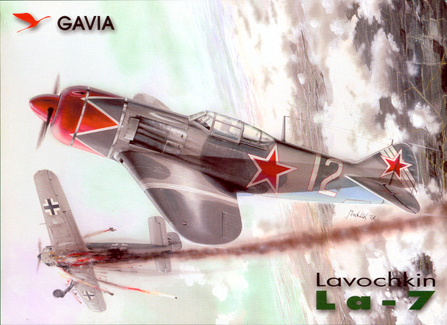
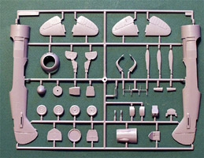
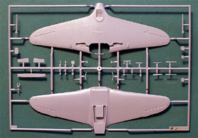
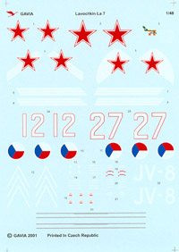
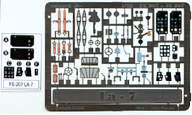

{kind=link}
{kind=link}
{kind=link}
{kind=link}


1/48 Lavochkin La-7

Kit #5
MSRP $29.99
Images and text Copyright © 2005 by Matt Swan
Developmental Background
The Lavochkin La-7 was the ultimate wooden Lavochkin fighter, and very likely the best fighter aircraft of the entire war, on either side. Considered one of the last "Grand Pianos", it was evolutionary rather than revolutionary. The two highest-scoring Soviet aces flew the La-7, one of them; Ivan Kozhedub was the top Allied ace of the war. The aircrafts record was legendary, matching 115 La-7 losses to over 3,100 victories over German enemy aircraft. The excellent performance of the La-7 combined with a veteran pilot made it nearly untouchable but more importantly it kept novices from succumbing to the enemy before they could acquire the necessary combat skills.
By 1943, the La-5 had become a mainstay of the Soviet Air Force (VVS), but its designer, Semyon Lavochkin, felt that it could be improved on. An all-metal fighter was envisioned but material shortages still prevented that development. Lavochkin began work on an interim fighter, which would replace much, but not all, of the aircraft's frame including the wing spars with metal alloys, but keeping the laminated wood exterior. This lightened the aircraft considerably; various other streamlining changes were made and a 1850 hp M-82FNV engine was fitted which further improved performance giving it a top speed of 423mph, 10-15 mph faster than the La-5. The prototype, designated La-120 by the bureau, first flew in November 1943 and was quickly put into production both at the Moscow plant and at a new plant established at Yaroslavl. The first production La-7 entered service the following year; the first service units received the new fighters in July 1944. Externally the La-7 did not appear much different than the La-5 but was about 44mph faster than the FW-190 and began racking up victories.
The La-7 is credited with downing a German 262 jet (only because it tried to out turn the La-7) and two American P-51 fighters in a friendly fire incident (the American pilots mistook the La-7 for a 190). After the war, the La-7 remained in service with the Soviets and many Warsaw Pact nations and was given the NATO code name FIN. It was also used as a test bed to explore advanced propulsion systems, including a tail-mounted liquid-fueled rocket (La-7R), two under-wing pulsejets (La-7D), and two under-wing ramjets (La-7S). Like many other outstanding piston-engined designs the age of the jet brought the La-7 to a premature retirement. Total production of the La-7 amounted to 5,753 aircraft, including a number of La-7UTI trainers.
The Kit
In 2000 Gavia may have seemed like the new kid on the block with the release of their Po-2 kit but in reality they are one of the Eduard companies based out of the Czech Republic. Although it appears as a separate brand name Gavia utilizes the mold making capabilities of Eduard. By 2002 they had released their fifth kit, the wonderful Lavochkin La-7. On it’s release the kit was hailed as the best La-7 on the market and while very nice it does have a few shortcomings.


The kit does not include an over abundance of parts, only two trees of high pressure injection molded pieces in the box. The trees feature nice, narrow sprue gates and little or no flash. The parts themselves display crisp engraved panel lines, conventional locator tabs and generally good fit. The overall engineering shows lots of forethought. The cockpit area appears somewhat spares but in reality the La-7 really did have a simple front office. You can dress this area up a little with some scratch built levers and seatbelts or with some aftermarket PE. The powerplant of the aircraft hid behind a large cooling fan which is represented by a single piece of plastic that appears very two dimensional with light detail. The wings are molded as full-span upper and lower halves that will ensure correct dihedral once completed. Control surfaces are molded in place and display what looks to be a fairly accurate fabric representation.
The single sprue of clear parts contains the main canopy in three sections, a armored plate for the pilot’s headrest and a reflective gunsight. The parts are nicely clear with finely raised frame lines. The central canopy section appears slightly thick and may cause some issue when displayed in an open position. One of the few faults with the kit is that the rear spine is too narrow (nearly 25%) and correcting this results in the kit canopy not fitting properly. Adding an aftermarket canopy resolves this issue should you choose to spread the fuselage spine to the correct dimensions. The landing gear struts seem slightly too long which would result in a nose high stance so you might want to consider trimming a millimeter or two off these parts.

The two small picture above are linked so you can click on them to view larger images. Overall we have 70 pieces molded in slightly soft polystyrene along with five clear pieces for a total parts count in the box of 75.
Decals and Instructions
The instructions come as two sets fold-outs, an eight-panel and a six-panel. The eight-panel sheet is devoted to construction, painting and decal placement. Construction is covered through sixteen exploded views that are clear and concise with plenty of color codes included. Painting instructions cover three aircraft, two Russian and one Czech.
The instructions for #27 flown by Major Kozhedub show it as a two-tone scheme which is incorrect. The second sheet covers the use of the painting masks that are included with the kit. The masks take care of the canopy and include a wrap around mask for the more complex nose scheme for #12 flown by Major Kosolapov. Also included on this sheet is a historical background on the aircraft in Czech and English and a comprehensive paint color chart listing paint codes for Humbrol, Revell, Tamiya and Agama.
The decals are very nice with the kit. They show vibrant colors, good color density and spot on print registry. They look to be very thin and include several service markings and stencils. The only shortcoming on the decals is that the font used for #27 is incorrect – okay, more nit picking, I’ll stop. Don’t forget to take a closer look at this decal sheet by clicking the smaller image at the right.
Conclusions
Even with the few discrepancies this is still an exciting kit. Most of the width issues and font issues would not be detectable by the average viewer and if they are enough to really bother you as the modeler they are correctable.

Built as an out of box project the parts fit together well and you can build a very nice model with minimal work. Now if you suffer from AMS there are a few things available now on the aftermarket. Right after this kit was released Eduard (go figure) released a really neat colored photo etched set to dress it up. Seen at the left is a scan of this set and I believe it was one of the first colored PE sets on the market. Legend has also come forward with an exceptional replacement cockpit that features a much better seat in addition to well-detailed sidewalls and dashboard. Parts Accessories has two large PE sets available now, one has a replacement cooling fan and landing gear details while the second features open flaps as it’s main attraction. Squadron has a replacement Vac canopy, True Details has replacement wheels (something worth looking into) and there are several aftermarket decal sheets available also. Gavia has also released a deluxe version of the kit, which is really just the same kit with the Eduard PE set included. Also by Gavia is a three-gun version of the La-7 but that’s another kit.
That pretty much sums up this kit, a good representation of a great aircraft and definitely worth adding to your collection.